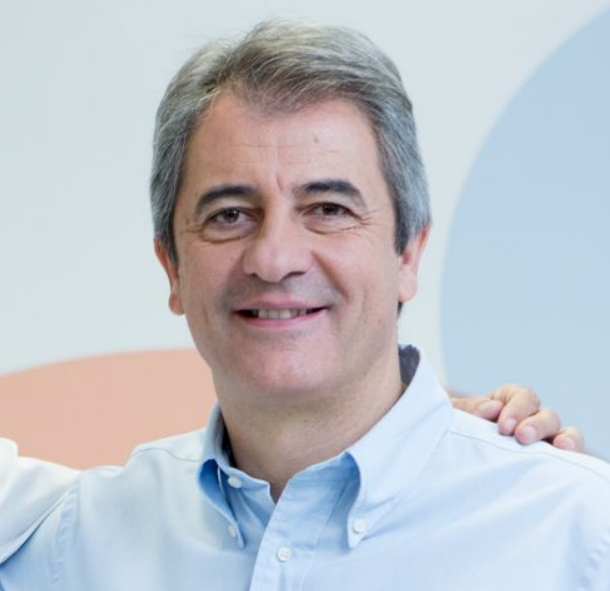
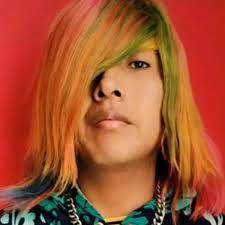
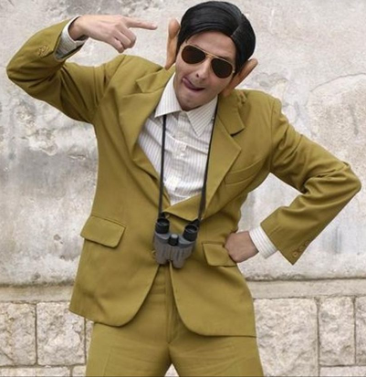

ABOUT US

Manuel Lama Jiménez (Madrid, 3 de enero de 1962), conocido como Manolo Lama,
es un locutor deportivo español. Trabaja en la radio, en la cadena COPE.
Es especialmente conocido por ser narrador de los partidos de la selección española de fútbol
en los medios radiofónicos para los que ha trabajado, y de varias ediciones del videojuego FIFA,
de la franquicia EA Sports. En la Cadena SER fue redactor jefe de Deportes, emisora donde editó
y presentó la sección deportiva de Hora 25 y Ser Deportivos, tanto en su edición de mediodía como
de tarde. También fue narrador y comentarista de Carrusel deportivo y colaboró en El larguero.
El 4 de enero de 2011, Lama comunicó la rescisión unilateral del contrato que le vinculaba a la Cadena
SER hasta finales de 2011.

Jesús Valle Choque (nacido el 25 de julio de 2000), conocido por su nombre artístico Faraón Love
Shady, es un rapero, cantante, compositor y celebridad de Internet peruano. Es conocido por usar
ropa extravagante, tener cabello multicolor y escribir canciones que contienen letras sexualmente
explícitas. Debutó con el sencillo "Sin Condón". Su segundo sencillo, "Panocha", incluye un remix
en colaboración con Ele A el Dominio y Jon Z. El video superó los 17 millones de reproducciones en
YouTube tras su lanzamiento.

Bernardo Cortés Maldonado (Jaén, 1934-Barcelona, 3 de marzo de 2017),también conocido como
«El Poeta de la Barceloneta», fue un escritor, actor y cantautor español residente en Barcelona.
Se trasladó a Barcelona en 1952, y en los año 1990 fue introducido en el mundo de la televisión
por Valerio Lazarov. A partir de ahí empezó a actuar en diferentes programas como Gente divertida.
Se hizo más popular caricaturizado por Oriol Grau como Palomino, en el programa Un altra cosa de TV3
presentado por Andreu Buenafuente.